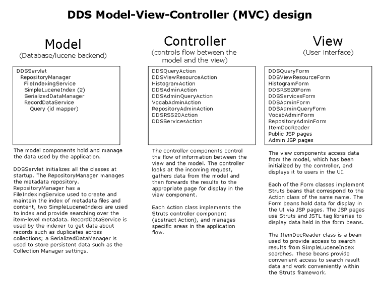

The Digital Discovery System (DDS) is a Java-based XML repository, search and discovery system that is built over the Apache Lucene indexing and search API. The DDS creates an index that is accessed using Web services and APIs and may be used in a wide variety of digital resource discovery and dissemination applications. It is currently used to implement DLESE and several other repository portals. The software runs in a servlet container such as Apache Tomcat and can be installed on Windows, Linux, Mac OS or UNIX systems. DDS may be configure to populate it's repository from the NSDL Data Repository (NDR) or from XML files that reside on a file system.
The DDS software is built upon a Model-View-Controller (MVC) architecture that is implemented using the Struts application framework. In this MVC architecture, the major parts of the software are broken up into three separate components: First, the Model component contains and exposes the metadata repository and accompanying information model; Second, the View provides the data presentation through the search web service and APIs; Third, the Controller component dispatches requests and controls flow between the Model and the View components (see [1]). The specific Java classes that are associated with these components are outlined in the DDS MVC class diagram below.
|  |
DDS MVC class diagram |
To provide rapid search and retrieval over the repository, a reverse index of each of the items in the repository is created and maintained, which is constructed from the metadata and, in some cases, the content of the resources refereced by the metadata. The index is rebuilt once a day to incorporate additions, modifications or deletions to the repository. The Java class FileIndexingService is used to manage the indexing process and in general there is a DocWriter class responsible for indexing each of the metadata frameworks available in the repository.
During index creation time, a RecordDataService is used to access information from the ID Mapper service about duplicate records across collections that refer to the same resource and to get the content from the resources for indexing. The RecordDataService also retrieves information from the index about annotations. Information about duplicate records and annotations is then used by the ADNFileIndexingWriter and incorporated into the individual item-level index entries for each record. This information is used at search time to boost the ranking of items that contain annotations and to provide a single resource-centric result for each resource that has multiple record entries in the repository.
The repository may contain multiple collections of digital objects. Collections may be developed and maintained independently and there may be resources that are cataloged multiple times across collections. The DDS provides a single resource-centric search result for each resource that exists in the repository, aggregating all metadata records into a single result set when there are multiple records across collections that refer to the resource.
To implement the single result set per resource, special techniques are used both at index creation time and at search time. At index creation time, two separate Lucene indexes are created: a primary index and a secondary index. The primary index is constructed with two kinds of entries: single-item entries that contain the text/field data from a single metadata record, which occurs when the record is the only one in the repository that refers to a given resource, and multi-item entries that contain the commingled text/field data from a group of metadata records, which occurs when there are multiple records across collections that refer to the same resource. The indexed content for the title field in a single-item entry, for example, will consist of the text from a single metadata record whereas the indexed content in the title field for a multi-record entry will contain the title field text from multiple metadata records concatenated together. Fields such as the title, description, URL, subject, grade level and resource type are stored in the index to allow rapid retrieval for display at search time. Single-item entries contain data that is ready for display, however because multi-item entries contain concatenated data from multiple records in these fields, they can not be used for display purposes.
When the indexing process is complete, each record in the repository has been accounted for in the primary index, some as single-item entries and some as members of multi-item entries. As the primary index is being constructed, the secondary index is also being generated. The secondary index is constructed by inserting single-item entries for each of the individual records that are members of multi-item entries in the primary index. These single-item entries are identical to the single-item entries in the primary index. This is important because it allows them to be searched in the same way and used interchangeably along with the single-item entries in the primary index to facilitate the display of results at search time.
At search time, the primary and secondary indexes are accessed in two stages to produce the results that get selected and displayed to the user. In stage one, the primary index is searched using the query criteria to form an ordered list of matching results. This list contains a mixture of single-item and multi-item entries. As noted earlier, only single-item entries can be displayed in results in the UI, so the multi-item entries in the initial results list must be replace with single-item entries prior to displaying them to users. In the second stage, then, the secondary index is searched each time a multi-item entry is encountered, and the best-matching single-item entry is selected from among the resources that comprise the multi-item record. This single-item entry is used in the display to the user, and links are provided in the UI that allow access to the other records that make up the multi-item entry.
In this second search stage, up to three searches may be necessary in order to arrive at a best-matching result from among the records that make up a multi-item entry. As a first try, the user's original search criteria are applied to the individual single-item records located in the secondary index that comprise the multi-item entry. In many cases this search will produce one or more results. If results are present, the best-matching one is returned for display to the user. It is possible, however, that no results will be encountered. This may occur if the user's search criteria does not match the content of any one single-item entry. For example, consider two records that make up a multi-item entry: record A contains the searchable text "ocean" but does not contain the grade range 9-12; record B contains the grade range 9-12 but does not contain the text "ocean." The user types the search "ocean" while selecting grades 9-12. In this case, the multi-item entry corresponding to records A and B contains both the text "ocean" and grade range 9-12 and thus it appears in the list of results generated in stage one. In stage two the same search criteria are applied to the single-item entries for records A and B. Since neither A or B contain both the text "ocean" and grade range 9-12, no matching results are found. When this occurs, additional searches using less precise search criteria are required in order to select a best-match. As a second pass, precision is reduced by giving precedence to the keyword portion of the user's query and removing any non-text-based search criteria. In the current example this would mean a search for "ocean" without grade range 9-12. Based on this refined search criteria, record A would appear as a matching result and would thus be returned for display to the user. Even with this more lenient criteria, however, it is still possible that no matches will be found. This can occur if the user did not use any keywords in their search or if the user entered multiple terms as part of their search, some of which being part of record A and the others part of record B. At this point, the third and final search case must produce a result since it is the last search to be performed. To ensure a result, then, one of either record A or B is chosen at random and used in the results display.
The search fields are described here, as part of the search web service documentation.
Developers, collection builders and repository administrators.
For developers:
For repository administrators:
Java 1.5/1.6, J2EE, Struts, Apache Lucene 2.0, Tomcat 5.5/6.0, Dom4j, JSTL 1.1 tag libraries.
See the development process documentation.
DDS uses (all optional):
See the development process documentation section on testing.
[1] Designing Enterprise Applications with the J2EETM Platform, Second Edition. Inderjeet Singh, Beth Stearns, Mark Johnson, and the Enterprise Team. http://java.sun.com/blueprints/guidelines/designing_enterprise_applications_2e/titlepage.html.
Last updated: $Date: 2009/09/02 23:02:38 $
Author: John Weatherley